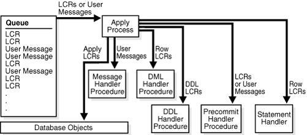

4 Oracle Streams Information Consumption
4.1 Overview of Information Consumption with Oracle Streams
Consuming information with Oracle Streams means dequeuing a message that contains the information from a queue and either processing or discarding the message. The consumed information can describe a database change, or it can be any other type of information. A dequeued message might have originated at the same database where it is dequeued, or it might have originated at a different database.
This section contains these topics:
4.1.1 Ways to Consume Information with Oracle Streams
The following are ways to consume information with Oracle Streams:
4.1.1.1 Implicit Consumption
With implicit consumption, an apply process automatically dequeues either captured LCRs, persistent LCRs, or persistent user messages. The queue must be an ANYDATA queue. If a message contains a logical change record (LCR), then the apply process can either apply it directly or call a user-specified procedure for processing. If the message does not contain an LCR, then the apply process can invoke a user-specified procedure called a message handler to process it.
Note:
Captured LCRs must be dequeued by an apply process. However, if an apply process or a user procedure called by an apply process re-enqueues a captured LCR, then the LCR becomes a persistent LCR and can be explicitly dequeued.
4.1.1.2 Explicit Consumption
With explicit consumption, messages are dequeued in one of the following ways:
-
A messaging client explicitly dequeues persistent LCRs or persistent user messages. The queue must be an
ANYDATAqueue. A messaging client dequeues messages when it is invoked by an application, and the application processes the messages after the messaging client dequeues them. -
An application explicitly dequeues messages manually and processes them. An application can dequeue the following types of messages: persistent LCRs, persistent user messages, buffered LCRs, and buffered user messages. The queue from which the messages are dequeued can be an
ANYDATAqueue or a typed queue.
4.1.2 Types of Information Consumed with Oracle Streams
The following types of information can be consumed with Oracle Streams:
4.1.2.1 Captured LCRs
A captured LCR is a logical change record (LCR) that was captured implicitly by a capture process and enqueued into the buffered queue portion of an ANYDATA queue.
Only an apply process can dequeue captured LCRs. After dequeue, an apply process can apply the captured LCR directly to make a database change, discard the captured LCR, send the captured LCR to an apply handler for processing, or re-enqueue the captured LCR into a persistent queue.
4.1.2.2 Persistent LCRs
A persistent LCR is a logical change record (LCR) that was enqueued into the persistent queue portion of an ANYDATA queue. A persistent LCR can be enqueued in one of the following ways:
-
Captured implicitly by a synchronous capture and enqueued
-
Constructed explicitly by an application and enqueued
-
Dequeued by an apply process and enqueued by the same apply process using the
SET_ENQUEUE_DESTINATIONprocedure in theDBMS_APPLY_ADMpackage
Persistent LCRs can be dequeued by an apply process, a messaging client, or an application.
4.1.2.3 Buffered LCRs
A buffered LCR is a logical change record (LCR) that was constructed explicitly by an application and enqueued into the buffered queue portion of an ANYDATA queue. Only an application can dequeue buffered LCRs.
4.1.2.4 Persistent User Messages
A persistent user message is a non-LCR message of a user-defined type that was enqueued into a persistent queue. A persistent user message can be enqueued in one of the following ways:
-
Created explicitly by an application and enqueued
-
Dequeued by an apply process and enqueued by the same apply process using the
SET_ENQUEUE_DESTINATIONprocedure in theDBMS_APPLY_ADMpackage
Apply processes and messaging clients can only dequeue persistent user messages that are in an ANYDATA queue. Applications can dequeue persistent user messages that are in an ANYDATA queue or a typed queue.
4.1.2.5 Buffered User Messages
A buffered user message is a non-LCR message of a user-defined type that was created explicitly by an application and enqueued into a buffered queue. A buffered user message can be enqueued into the buffered queue portion of an ANYDATA queue or a typed queue. Only an application can dequeue buffered user messages.
4.1.3 Summary of Information Consumption Options
Table 4-1 summarizes the information consumption options available with Oracle Streams.
Table 4-1 Information Consumption Options with Oracle Streams
| Consumption Type | Dequeues Messages | Message Types | Use When |
|---|---|---|---|
|
Continually and automatically when enabled |
Captured LCRs Persistent LCRs Persistent user messages |
You want to dequeue and process captured LCRs. You want to dequeue persistent LCRs or persistent user messages continually and automatically from the persistent queue portion of an ANYDATA queue. You want to dequeue LCRs that must be applied directly to database objects to make database changes. You want to dequeue messages and process them with an apply handler. |
|
|
When invoked by an application |
Persistent LCRs Persistent user messages |
You want to use a simple method for dequeuing on demand persistent LCRs or persistent user messages from the persistent queue portion of an You want to send messages to an application for processing after dequeue. |
|
|
Manually according to application logic |
Persistent LCRs Buffered LCRs Persistent user messages Buffered user messages |
You want an application to dequeue manually persistent LCRs or buffered LCRs from an You want an application to dequeue manually persistent user messages or buffered user messages from an |
Note:
A single database can use any combination of the information consumption options summarized in the table.
See Also:
-
Oracle Database Advanced Queuing User's Guide for information about enqueuing messages
-
Oracle Streams Replication Administrator's Guide for more information about managing LCRs
4.2 Implicit Consumption with an Apply Process
This section explains the concepts related to Oracle Streams apply processes.
This section contains these topics:
4.2.1 Introduction to the Apply Process
An apply process is an optional Oracle background process that dequeues messages from a specific queue and either applies each message directly, discards it, passes it as a parameter to an apply handler, or re-enqueues it. These messages can be logical change records (LCRs) or user messages.
Note:
An apply process can only dequeue messages from an ANYDATA queue, not a typed queue.
4.2.2 Apply Process Rules
An apply process applies messages based on rules that you define. For LCRs, each rule specifies the database objects and types of changes for which the rule evaluates to TRUE. For user messages, you can create rules to control apply process behavior for specific types of messages. You can place these rules in the positive rule set or negative rule set for the apply process.
If a rule evaluates to TRUE for a message, and the rule is in the positive rule set for an apply process, then the apply process dequeues and processes the message. If a rule evaluates to TRUE for a message, and the rule is in the negative rule set for an apply process, then the apply process discards the message. If an apply process has both a positive and a negative rule set, then the negative rule set is always evaluated first.
You can specify apply process rules for LCRs at the following levels:
-
A table rule applies or discards either row changes resulting from DML changes or DDL changes to a particular table. A subset rule is a table rule that include a subset of the row changes to a particular table.
-
A schema rule applies or discards either row changes resulting from DML changes or DDL changes to the database objects in a particular schema.
-
A global rule applies or discards either all row changes resulting from DML changes or all DDL changes in the queue associated with an apply process.
4.2.3 Types of Messages That Can Be Processed with an Apply Process
Apply processes can dequeue the following types of messages:
-
Captured LCRs: A logical change record (LCR) that was captured implicitly by a capture process and enqueued into the buffered queue portion of an ANYDATA queue. In some situations, an optimization enables capture processes to send LCRs to apply processes more efficiently. This optimization is called combined capture and apply.
-
Persistent LCRs: An LCR that was captured implicitly by a synchronous capture, constructed and enqueued persistently by an application, or enqueued by an apply process. A persistent LCR is enqueued into the persistent queue portion of an
ANYDATAqueue. -
Persistent user messages: A non-LCR message of a user-defined type that was enqueued explicitly by an application or an apply process. A persistent user message is enqueued into the persistent queue portion of an
ANYDATAqueue. In addition, a user message can be enqueued into anANYDATAqueue or a typed queue, but an apply process can dequeue only user messages in anANYDATAqueue.
A single apply process cannot dequeue both from the buffered queue and persistent queue portions of a queue. If messages in both the buffered queue and persistent queue must be processed by an apply process, then the destination database must have at least two apply processes to process the messages.
See Also:
-
Oracle Streams Replication Administrator's Guide for information about creating an apply process
4.2.4 Message Processing Options for an Apply Process
An apply process can either apply messages directly or send messages to an apply handler for processing. Your options for message processing depend on whether the message received by an apply process is a row logical change record (row LCR), a DDL logical change record (DDL LCR), or a user message.
Figure 4-1 shows the message processing options for an apply process and which options can be used for different types of messages.
Figure 4-1 Apply Process Message Processing Options
Description of "Figure 4-1 Apply Process Message Processing Options"
By default, an apply process applies LCRs directly. The apply process executes the change in the LCR on the database object identified in the LCR. The apply process either successfully applies the change in the LCR or, if a conflict or an apply error is encountered, tries to resolve the error with a conflict handler or a user-specified procedure called an error handler.
If a conflict handler can resolve the conflict, then it either applies the LCR or it discards the change in the LCR. If an error handler can resolve the error, then it should apply the LCR, if appropriate. An error handler can resolve an error by modifying the LCR before applying it. If the conflict handler or error handler cannot resolve the error, then the apply process places the transaction, and all LCRs associated with the transaction, into the error queue.
Instead of applying LCRs directly, you can process LCRs in a customized way with apply handlers. When you use an apply handler, an apply process passes a message to a collection of SQL statements or to a user-defined PL/SQL procedure for processing. An apply handler can process the message in a customized way.
An apply process cannot apply user messages directly. An apply process that dequeues user messages must have a message handler to process the user messages.
There are several types of apply handlers. This section uses the following categories to describe apply handlers:
Table 4-2 Characteristics of Apply Handlers
| Category | Description |
|---|---|
|
Mechanism |
The means by which the apply handler processes messages. The mechanism for an apply handler is either SQL statements or a user-defined PL/SQL procedure. |
|
Type of message |
The type of message processed by the apply handler. The message type is either row logical change record (row LCR), DDL logical change record (DDL LCR), persistent user message, or transaction control directive. |
|
Message creator |
The component that creates the messages processed by the apply handler. The message creator is either a capture process, a synchronous capture, or an application. |
|
Scope |
The level at which the apply handler is set. The scope is either one operation on one table or all operations on all database objects. |
|
Number allowed for each apply process |
The number of apply handlers of a specific type allowed for each apply process. The number allowed is either one or many. |
The following sections describe different types of apply handlers:
Note:
An apply process cannot apply non-LCR messages directly. Each user message dequeued by an apply process must be processed with a message handler.
4.2.4.1 DML Handlers
DML handlers process row logical change records (row LCRs) dequeued by an apply process. There are two types of DML handlers: statement DML handlers and procedure DML handlers. A statement DML handler uses a collection of SQL statements to process row LCRs, while a procedure DML handler uses a PL/SQL procedure to process row LCRs.
The following sections describe DML handlers and error handlers:
4.2.4.1.1 Statement DML Handlers
A statement DML handler has the following characteristics:
-
Mechanism: A collection of SQL statements
-
Type of message: Row LCR
-
Message creator: Capture process, synchronous capture, or application
-
Scope: One operation on one table
-
Number allowed for each apply process: Many, and many can be specified for the same operation on the same table
Each SQL statement included in a statement DML handler has a unique execution sequence number. When a statement DML handler is invoked, it executes its statements in order from the statement with the lowest execution sequence number to the statement with the highest execution sequence number. An execution sequence number can be a positive number, a negative number, or a decimal number.
For each table associated with an apply process, you can set a separate statement DML handler to process each of the following types of operations in row LCRs:
-
INSERT -
UPDATE -
DELETE
A statement DML handler is invoked when the apply process dequeues a row LCR that performs the specified operation on the specified table. For example, the hr.employees table can have one statement DML handler to process INSERT operations and a different statement DML handler to process UPDATE operations. Alternatively, the hr.employees table can use the same statement DML handler for each type of operation.
You can specify multiple statement DML handlers for the same operation on the same table. In this case, these statement DML handlers can execute in any order, and each statement DML handler receives a copy of the original row LCR that was dequeued by the apply process.
A SQL statement in a statement DML handler can include the following types of operations in row LCRs:
-
INSERT -
UPDATE -
DELETE -
MERGE
For example, a SQL statement in a statement DML handler can process a row LCR that updates the hr.employees table, and this statement can include an INSERT operation that inserts a row into a different table.
Statement DML handlers can run valid DML statements on row LCRs, but statement DML handlers cannot modify the column values in row LCRs. However, statement DML handlers can use SQL to insert a row or update a row with column values that are different than the ones in the row LCR. Also, statement DML handlers should never commit and never roll back.
To execute a row LCR in a statement DML handler, invoke the EXECUTE member procedure for the row LCR. A statement that runs the EXECUTE member procedure can be placed anywhere in the execution sequence order of the statement DML handler. It is not necessary to execute a row LCR unless the goal is to apply the changes in the row LCR to a table in addition to performing any other SQL statements in the statement DML handler.
To add a statement to a statement DML handler, use the ADD_STMT_TO_HANDLER procedure in the DBMS_STREAMS_HANDLER_ADM package. To add a statement DML handler to an apply process, use the ADD_STMT_HANDLER procedure in the DBMS_APPLY_ADM package. You can either add a statement DML handler to a specific apply process, or you can add a statement DML handler as a general statement DML handler that is used by all apply processes in the database. If a statement DML handler for an operation on a table is used by a specific apply process, and another statement DML handler is a general handler for the same operation on the same table, then both handlers are invoked when an apply process dequeues a row LCR with the operation on the table. Each statement DML handler receives the original row LCR, and the statement DML handlers can execute in any order.
Statement DML handlers are often used to record the changes made to tables. Statement DML handlers can also perform changes that do not modify column values. For example, statement DML handlers can change the data type of a column.
Note:
-
When you run the
ADD_STMT_HANDLERprocedure, you specify the object for which the handler is used. This object does not need to exist at the destination database when you run the procedure. -
A change handler is a special type of statement DML handler that tracks table changes and was created by either the
DBMS_STREAMS_ADM.MAINTAIN_CHANGE_TABLEprocedure or theDBMS_APPLY_ADM.SET_CHANGE_HANDLERprocedure.
See Also:
-
"Row LCRs"
-
Using Oracle Streams to Record Table Changes for information about change handlers
-
Oracle Database PL/SQL Packages and Types Reference for more information about the
EXECUTEmember procedure for LCR types
4.2.4.1.2 Procedure DML Handlers
A procedure DML handler has the following characteristics:
-
Mechanism: A user-defined PL/SQL procedure
-
Type of message: Row LCR
-
Message creator: Capture process, synchronous capture, or application
-
Scope: One operation on one table
-
Number allowed for each apply process: Many, but only one can be specified for the same operation on the same table
For each table associated with an apply process, you can set a separate procedure DML handler to process each of the following types of operations in row LCRs:
-
INSERT -
UPDATE -
DELETE -
LOB_UPDATE
A procedure DML handler is invoked when the apply process dequeues a row LCR that performs the specified operation on the specified table. For example, the hr.employees table can have one procedure DML handler to process INSERT operations and a different procedure DML handler to process UPDATE operations. Alternatively, the hr.employees table can use the same procedure DML handler for each type of operation.
The PL/SQL procedure can perform any customized processing of row LCRs. For example, if you want each insert into a particular table at the source database to result in inserts into multiple tables at the destination database, then you can create a user-defined PL/SQL procedure that processes INSERT operations on the table to accomplish this. Unlike statement DML handlers, procedure DML handlers can modify the column values in row LCRs.
A procedure DML handler should never commit and never roll back, except to a named savepoint that the user-defined PL/SQL procedure has established. To execute a row LCR inside a procedure DML handler, invoke the EXECUTE member procedure for the row LCR. Also, a procedure DML handler should handle any errors that might occur during processing.
To set a procedure DML handler, use the SET_DML_HANDLER procedure in the DBMS_APPLY_ADM package. You can either set a procedure DML handler for a specific apply process, or you can set a procedure DML handler to be a general procedure DML handler that is used by all apply processes in the database. If a procedure DML handler for an operation on a table is set for a specific apply process, and another procedure DML handler is a general handler for the same operation on the same table, then the specific procedure DML handler takes precedence over the general procedure DML handler.
Typically, procedure DML handlers are used in Oracle Streams replication environments to perform custom processing of row LCRs, but procedure DML handlers can be used in nonreplication environments as well. For example, you can use such handlers to record changes made to database objects without replicating these changes.
Note:
When you run the SET_DML_HANDLER procedure, you specify the object for which the handler is used. This object does not need to exist at the destination database when you run the procedure.
See Also:
-
"Row LCRs"
-
Oracle Database PL/SQL Packages and Types Reference for more information about the
EXECUTEmember procedure for LCR types
4.2.4.2 Error Handlers
An error handler has the following characteristics:
-
Mechanism: A user-defined PL/SQL procedure
-
Type of message: Row LCR
-
Message creator: Capture process, synchronous capture, or application
-
Scope: One operation on one table
-
Number allowed for each apply process: Many, but only one can be specified for the same operation on the same table
An error handler is similar to a procedure DML handler. The difference between the two is that an error handler is invoked only if an apply error results when an apply process tries to apply a row LCR for the specified operation on the specified table.
You create an error handler in the same way that you create a procedure DML handler, except that you set the error_handler parameter to TRUE when you run the SET_DML_HANDLER procedure.
An error handler cannot coexist with a procedure DML handler for the same operation on the same table. However, an error handler can coexist with a statement DML handler for the same operation on the same table.
Note:
Statement DML handlers cannot be used as error handlers.
See Also:
4.2.4.3 DDL Handlers
A DDL handler has the following characteristics:
-
Mechanism: A user-defined PL/SQL procedure
-
Type of message: DDL LCR
-
Message creator: Capture process or application
-
Scope: All DDL LCRs dequeued by the apply process
-
Number allowed for each apply process: One
The user-defined PL/SQL procedure can perform any customized processing of DDL LCRs. For example, to log DDL changes before applying them, you can create a procedure that processes DDL operations to accomplish this.
To execute a DDL LCR inside a DDL handler, invoke the EXECUTE member procedure for the DDL LCR. To associate a DDL handler with a particular apply process, use the ddl_handler parameter in the CREATE_APPLY or the ALTER_APPLY procedure in the DBMS_APPLY_ADM package.
Typically, DDL handlers are used in Oracle Streams replication environments to perform custom processing of DDL LCRs, but these handlers can be used in nonreplication environments as well. For example, you can use such handlers to record changes made to database objects without replicating these changes.
See Also:
-
"DDL LCRs"
-
Oracle Database PL/SQL Packages and Types Reference for more information about the
EXECUTEmember procedure for LCR types -
"Managing a DDL Handler" for more information about DDL handlers
4.2.4.4 Message Handlers
A message handler has the following characteristics:
-
Mechanism: A user-defined PL/SQL procedure
-
Type of message: Persistent user message (non-LCR)
-
Message creator: Application
-
Scope: All user messages dequeued by the apply process
-
Number allowed for each apply process: One
A message handler offers advantages in any environment that has applications that must update one or more remote databases or perform some other remote action. These applications can enqueue persistent user messages into a queue at the local database, and Oracle Streams can propagate each persistent user message to the appropriate queues at destination databases. If there are multiple destinations, then Oracle Streams provides the infrastructure for automatic propagation and processing of these messages at these destinations. If there is only one destination, then Oracle Streams still provides a layer between the application at the source database and the application at the destination database, so that, if the application at the remote database becomes unavailable, then the application at the source database can continue to function normally.
For example, a message handler can convert a persistent user message into an electronic mail message. In this case, the persistent user message can contain the attributes you would expect in an electronic mail message, such as from, to, subject, text_of_message, and so on. After converting a message into an electronic mail messages, the message handler can send it out through an electronic mail gateway.
You can specify a message handler for an apply process using the message_handler parameter in the CREATE_APPLY or the ALTER_APPLY procedure in the DBMS_APPLY_ADM package. An Oracle Streams apply process always assumes that a non-LCR message has no dependencies on any other messages in the queue. If parallelism is greater than 1 for an apply process that applies persistent user messages, then these messages can be dequeued by a message handler in any order. Therefore, if dependencies exist between these messages in your environment, then Oracle recommends that you set apply process parallelism to 1.
4.2.4.5 Precommit Handlers
A precommit handler has the following characteristics:
-
Mechanism: A user-defined PL/SQL procedure
-
Type of message: Commit directive for transactions that include row LCRs or persistent user messages
-
Message creator: Capture process, synchronous capture, or application
-
Scope: All row LCRs with commit directives dequeued by the apply process
-
Number allowed for each apply process: One
You can use a precommit handler to audit commit directives for captured LCRs and transaction boundaries for persistent LCRs and persistent user messages. A commit directive is a transaction control directive that contains a COMMIT. A precommit handler is a user-defined PL/SQL procedure that can receive the commit information for a transaction and process the commit information in any customized way. A precommit handler can work with a statement DML handler, procedure DML handler, or message handler.
For example, a precommit handler can improve performance by caching data for the length of a transaction. This data can include cursors, temporary LOBs, data from a message, and so on. The precommit handler can release or execute the objects cached by the handler when a transaction completes.
A precommit handler executes when the apply process commits a transaction. You can use the commit_serialization apply process parameter to control the commit order for an apply process.
The following list describes commit directives and transaction boundaries:
-
Commit Directives for Captured LCRs: When you are using a capture process, and a user commits a transaction, the capture process captures an internal commit directive for the transaction if the transaction contains row LCRs that were captured by the capture process. The capture process also records the transaction identifier in each captured LCR in a transaction.
Once enqueued, these commit directives can be propagated to destination queues, along with the LCRs in a transaction. A precommit handler receives each commit SCN for these internal commit directives in the queue of an apply process before they are processed by the apply process.
-
Transaction Boundaries for Persistent LCRs Enqueued by Synchronous Captures: When you are using a synchronous capture, and a user commits a transaction, the persistent LCRs that were enqueued by the synchronous capture are organized into a message group. The synchronous capture records the transaction identifier in each persistent LCR in a transaction.
After persistent LCRs are enqueued by a synchronous capture, the persistent LCRs in the message group can be propagated to other queues. When an apply process is configured to process these persistent LCRs, it generates a commit SCN for all of the persistent LCRs in a message group. The commit SCN values generated by an individual apply process have no relation to the source transaction, or to the values generated by any other apply process. A precommit handler configured for such an apply process receives the commit SCN supplied by the apply process.
-
Transaction Boundaries for Messages Enqueued by Applications: An application can enqueue persistent LCRs and persistent user messages, as well as other types of messages. When the user performing these enqueue operations issues a
COMMITstatement to end the transaction, the enqueued persistent LCRs and persistent user messages are organized into a message group.When messages that were enqueued by an application are organized into a message group, the messages in the message group can be propagated to other queues. When an apply process is configured to process these messages, it generates a single transaction identifier and commit SCN for all the messages in a message group. Transaction identifiers and commit SCN values generated by an individual apply process have no relation to the source transaction, or to the values generated by any other apply process. A precommit handler configured for such an apply process receives the commit SCN supplied by the apply process.
See Also:
-
Oracle Database PL/SQL Packages and Types Reference for information about apply process parameters
4.2.4.6 Considerations for Apply Handlers
The following are considerations for using apply handlers:
-
Both statement DML handlers and procedure DML handlers process row LCRs. Procedure DML handlers require PL/SQL processing while statement DML handlers do not. Therefore, statement DML handlers typically perform better than procedure DML handlers. Statement DML handlers also are usually easier to configure that procedure DML handlers. However, procedure DML handlers can perform operations that are not possible with a statement DML handler, such as controlling program flow and trapping errors. In addition, procedure DML handlers can modify column values in row LCRs while statement DML handlers cannot.
-
Statement DML handlers, procedure DML handlers, error handlers, DDL handlers, and message handlers can execute an LCR by calling the LCR's
EXECUTEmember procedure. -
All applied DDL LCRs commit automatically. Therefore, if a DDL handler calls the
EXECUTEmember procedure of a DDL LCR, then a commit is performed automatically. -
An apply handler that uses a PL/SQL procedure can set an Oracle Streams session tag. Statement DML handlers cannot set an Oracle Streams session tag.
-
An apply handler that uses a user-defined PL/SQL procedure can call a Java stored procedure that is published (or wrapped) in a PL/SQL procedure. Statement DML handlers cannot call a Java stored procedure.
-
If an apply process tries to invoke an apply handler that does not exist or is invalid, then the apply process aborts.
-
If an apply handler that uses a PL/SQL procedure invokes a procedure or function in an Oracle-supplied package, then the user who runs the apply handler must have direct
EXECUTEprivilege on the package. It is not sufficient to grant this privilege through a role. TheDBMS_STREAMS_AUTH.GRANT_ADMIN_PRIVILEGEprocedure grantsEXECUTEprivilege on all Oracle Streams packages, and other privileges relevant to Oracle Streams. A statement DML handler cannot invoke a procedure or function.
See Also:
-
Oracle Database PL/SQL Packages and Types Reference for more information about the
EXECUTEmember procedure for LCR types -
Oracle Streams Replication Administrator's Guide for more information about Oracle Streams tags
4.2.4.7 Summary of Message Processing Options
The table in this section summarizes the message processing options available when you are using one or more of the apply handlers described in the previous sections. Apply handlers are optional for row LCRs and DDL LCRs because an apply process can apply these messages directly. However, a message handler is required for processing persistent user messages. In addition, an apply process dequeues a message only if the message satisfies the rule sets for the apply process. In general, a message satisfies the rule sets for an apply process if no rules in the negative rule set evaluate to TRUE for the message, and at least one rule in the positive rule set evaluates to TRUE for the message.
Table 4-3 summarizes the message processing options for an apply process.
Table 4-3 Summary of Message Processing Options
| Message Processing Option | Mechanism | Type of Message | Message Creator | Default Apply Process Behavior | Scope of Handler | Number Allowed for Each Apply Process |
|---|---|---|---|---|---|---|
|
Apply Message Directly |
Not applicable |
Row LCR or DDL LCR |
Capture process, synchronous capture, or application |
Execute DML or DDL |
Not applicable |
Not applicable |
|
Statement DML Handler |
SQL statements |
Row LCR |
Capture process, synchronous capture, or application |
Execute DML |
One operation on one table |
Many, and many can be specified for the same operation on the same table |
|
Procedure DML Handler or Error Handler |
User-defined PL/SQL procedure |
Row LCR |
Capture process, synchronous capture, or application |
Execute DML |
One operation on one table |
Many, but only one can be specified for the same operation on the same table |
|
DDL Handler |
User-defined PL/SQL procedure |
DDL LCR |
Capture process or application |
Execute DDL |
Entire apply process |
One |
|
Message Handler |
User-defined PL/SQL procedure |
Persistent user message |
Application |
Create error transaction (if no message handler exists) |
Entire apply process |
One |
|
Precommit Handler |
User-defined PL/SQL procedure |
Commit directive for transactions that include row LCRs or user messages |
Capture process, synchronous capture, or application |
Commit transaction |
Entire apply process |
One |
In addition to the message processing options described in this section, you can use the SET_ENQUEUE_DESTINATION procedure in the DBMS_APPLY_ADM package to instruct an apply process to enqueue messages into the persistent queue portion of a specified destination queue. Also, you can control message execution using the SET_EXECUTE procedure in the DBMS_APPLY_ADM package.
4.2.5 The Source of Messages Applied by an Apply Process
The following list describes the source database for different types of messages that are processed by an apply process:
-
For a captured LCR, the source database is the database where the change encapsulated in the LCR was generated in the redo log.
-
For a persistent LCR captured by a synchronous capture, the source database is the database where the synchronous capture that captured the row LCR is configured.
-
For a persistent LCR constructed and enqueued by an application, the source database is the database where the message was first enqueued.
-
For a user message, the source database is the database where the message was first enqueued.
A single apply process can apply user messages that originated at multiple databases. However, a single apply process can apply captured LCRs from only one source database. Similarly, a single apply process can apply persistent LCRs captured by a synchronous capture from only one source database. Applying these LCRs requires knowledge of the dependencies, meaningful transaction ordering, and transactional boundaries at the source database.
Captured LCRs from multiple databases can be sent to a single destination queue. The same is true for persistent LCRs captured by a synchronous capture. However, if a single queue contains these LCRs from multiple source databases, then there must be multiple apply processes retrieving these LCRs. Each of these apply processes should be configured to receive messages from exactly one source database using rules. Oracle recommends that you use a separate ANYDATA queue for messages from each source database.
Also, each apply process can apply captured LCRs from only one capture process. If multiple capture processes are running on a source database, and LCRs from more than one of these capture processes are applied at a destination database, then there must be one apply process to apply changes from each capture process. In such an environment, Oracle recommends that each ANYDATA queue used by a capture process, propagation, or apply process have captured LCRs from at most one capture process from a particular source database. A queue can contain LCRs from more than one capture process if each capture process is capturing changes that originated at a different source database.
The same restriction applies to persistent LCRs captured by multiple synchronous captures at the same source database. Store these LCRs in separate ANYDATA queues, and use a separate apply process to apply the LCRs from each synchronous capture.
Note:
Captured LCRs are in the buffered queue portion of a queue while persistent LCRs are in the persistent queue portion of a queue. Therefore, a single apply process cannot apply both captured LCRs and persistent LCRs.
4.2.6 Data Types Applied
When applying row LCRs resulting from DML changes to tables, an apply process applies changes made to columns of the following data types:
-
VARCHAR2 -
NVARCHAR2 -
NUMBER -
FLOAT -
LONG -
DATE -
BINARY_FLOAT -
BINARY_DOUBLE -
TIMESTAMP -
TIMESTAMPWITHTIMEZONE -
TIMESTAMPWITHLOCALTIMEZONE -
INTERVALYEARTOMONTH -
INTERVALDAYTOSECOND -
RAW -
LONGRAW -
CHAR -
NCHAR -
CLOBwithBASICFILEorSECUREFILEstorage -
NCLOBwithBASICFILEorSECUREFILEstorage -
BLOBwithBASICFILEorSECUREFILEstorage -
UROWID -
XMLTypestored asCLOB, object relationally, or as binary XML
Note:
-
Oracle Streams capture processes can only capture changes to
XMLTypecolumns that are stored asCLOBs. However, apply processes can apply these captured LCRs toXMLTypecolumns that are stored asCLOBs, object relationally, or as binary XML. -
Apply processes do not support extended data types introduced in Oracle Database 12c.
-
XMLTypestored as aCLOBis deprecated in this release.
See Also:
4.2.7 Automatic Data Type Conversion During Apply
During apply, an apply process automatically converts certain data types when there is a mismatch between the data type of a column in the row logical change record (row LCR) and the data type of the corresponding column in a table.
Table 4-4 shows which data type combinations are converted automatically during apply.
Table 4-4 Data Type Combinations Converted Automatically During Apply
| Data Types | To CHAR | To NCHAR | To VARCHAR2 | To NVARCHAR2 | To CLOB | To BLOB | To DATE | To TIMESTAMP |
|---|---|---|---|---|---|---|---|---|
|
From |
Not Applicable |
Yes |
Yes |
Yes |
Yes |
No |
No |
No |
|
From |
Yes |
Not Applicable |
Yes |
Yes |
Yes |
No |
No |
No |
|
From |
Yes |
Yes |
Not Applicable |
Yes |
Yes |
No |
No |
No |
|
From |
Yes |
Yes |
Yes |
Not Applicable |
Yes |
No |
No |
No |
|
From |
Yes |
Yes |
Yes |
Yes |
No |
No |
No |
No |
|
From |
No |
No |
No |
No |
Yes |
No |
No |
No |
|
From |
No |
No |
No |
No |
No |
Yes |
Yes |
No |
|
From |
No |
No |
No |
No |
No |
Yes |
Yes |
No |
|
From |
No |
No |
No |
No |
No |
No |
Not Applicable |
Yes |
|
From |
No |
No |
No |
No |
No |
No |
Yes |
Not Applicable |
An apply process automatically performs data type conversion for a data type combination when Table 4-4 specifies "Yes" for the combination. An apply process does not perform data type conversion for a data type combination when Table 4-4 specifies "No" for the combination. For example, an apply process automatically converts a CHAR to an NCHAR, but it does not convert a CHAR to a BLOB.
Also, if the corresponding table column is not large enough to hold the converted string from a row LCR column, then the apply process raises an error.
The following sections provide more information about automatic data type conversion during apply:
Note:
An apply process must be part of Oracle Database 11g Release 1 (11.1.0.7) or later to perform automatic data type conversion. However, an apply process can convert columns in row LCRs that were captured or constructed on an earlier Oracle Database release.
See Also:
Oracle Database SQL Language Reference for more information about data types
4.2.7.1 Automatic Trimming of Character Data Types During Apply
The rtrim_on_implicit_conversion apply process parameter determines whether the apply process trims data when it converts a CHAR or NCHAR to a VARCHAR2, NVARCHAR2, or CLOB. When this parameter is set to Y, the apply process automatically removes blank padding from the right end of a column during data type conversion. When this parameter is set to N, the apply process preserves blank padding during data type conversion.
Consider the following example:
-
A row LCR contains
'abc'for aCHAR(10)column. -
The corresponding table column for the row LCR is
NVARCHAR2(10).
If the rtrim_on_implicit_conversion apply process parameter is set to Y, the apply process inserts 'abc' into the table column and trims the padding after these characters. If the rtrim_on_implicit_conversion apply process parameter is set to N, then the apply process inserts 'abc' into the table column, and the remaining space in the column is filled with blanks.
4.2.7.2 Automatic Conversion and LOB Data Types
Procedure DML handlers and error handlers can use LOB assembly for data that has been converted from LONG to CLOB or from LONG RAW to BLOB.
4.2.8 SQL Generation
SQL generation is the ability to generate the SQL statement required to perform the change encapsulated in a row logical change record (row LCR). Apply processes can generate the SQL statement necessary to perform the insert, update, or delete operation in a row LCR.
This section contains these topics:
Note:
This section describes using SQL generation with the PL/SQL interface. You can also use SQL generation with XStream interfaces.
See Also:
-
"Creating a Procedure DML Handler" for an example of a procedure DML handler that uses SQL generation
-
Oracle Database XStream Guide for information about using SQL generation with XStream
4.2.8.1 Interfaces for Performing SQL Generation
You can use the GET_ROW_TEXT and GET_WHERE_CLAUSE member procedures for row LCRs to perform SQL generation. The PL/SQL interface generates SQL in a CLOB data type.
4.2.8.2 SQL Generation Formats
SQL statement can be generated in one of two formats: inline values or bind variables. Use inline values when the returned SQL statement is relatively small. For larger SQL statements, use bind variables. In this case, the bind variables are passed in a separate list that includes pointers to both old and new column values.
For information about using bind variables with each interface, see the documentation about the GET_ROW_TEXT and GET_WHERE_CLAUSE row LCR member procedures in Oracle Database PL/SQL Packages and Types Reference.
Note:
For generated SQL statements with the values inline, SQL injection is possible. SQL injection is a technique for maliciously exploiting applications that use client-supplied data in SQL statements, thereby gaining unauthorized access to a database in order to view or manipulate restricted data. Oracle strongly recommends using bind variables if you plan to execute the generated SQL statement. See Oracle Database PL/SQL Language Reference for more information about SQL injection.
4.2.8.3 SQL Generation and Data Types
SQL generation supports the following data types:
-
VARCHAR2 -
NVARCHAR2 -
NUMBER -
FLOAT -
DATE -
BINARY_FLOAT -
BINARY_DOUBLE -
LONG -
TIMESTAMP -
TIMESTAMPWITHTIMEZONE -
TIMESTAMPWITHLOCALTIMEZONE -
INTERVALYEARTOMONTH -
INTERVALDAYTOSECOND -
RAW -
LONGRAW -
CHAR -
NCHAR -
CLOBwithBASICFILEstorage -
NCLOBwithBASICFILEstorage -
BLOBwithBASICFILEstorage -
XMLTypestored asCLOB
Note:
SQL generation does not support extended data types introduced in Oracle Database 12c.
4.2.8.3.1 SQL Generation and Automatic Data Type Conversion
An apply process performs implicit data type conversion where it is possible, and the generated SQL follows ANSI standards where it is possible. The following are considerations for automatic data type conversions:
-
NULLis specified as"NULL". -
Single quotation marks are converted into double quotation marks for the following data types when they are inline values:
CHAR,VARCHAR2,NVARCHAR2,NCHAR,CLOB, andNCLOB. -
LONGdata is converted intoCLOBdata. -
LONGRAWdata is converted intoBLOBdata.
4.2.8.3.2 SQL Generation and LOB, LONG, LONG RAW, and XMLType Data Types
For INSERT and UPDATE operations on LOB columns, an apply process automatically assembles the LOB chunks using LOB assembly. For these operations, the generated SQL includes a non-NULL empty value. The actual values of the chunked columns arrive in subsequent LCRs. For each chunk, you must perform the correct SQL operation on the correct column.
Similarly, for LONG, LONG RAW, and XMLType data types, an apply process generates a non-NULL empty value, and the actual values of the column arrive in chunks in subsequent LCRs. For each chunk, you must perform the correct SQL operation on the correct column.
In the inline version of the generated SQL, for LOB, LONG, LONG RAW, and XMLType data type columns, the following SQL is generated for inserts and updates:
-
For
CLOB,NCLOB, andLONGdata type columns:EMPTY_CLOB()
-
For
BLOBandLONGRAWdata type columns:EMPTY_BLOB()
-
For
XMLTypecolumns:XMLTYPE.CREATEXML('xml /')where
xml/is the XML chunk.
After the LCR that contains the DML statement arrives, the data for these changes arrive in separate chunks. You can generate the WHERE clause for such a change and use the generated WHERE clause to identify the row for the modifications contained in the chunks. For example, in PL/SQL you can use the GET_WHERE_CLAUSE row LCR member procedure to generate the WHERE clause for a row change.
For INSERT and UPDATE operations, the generated WHERE clause identifies the row after the insert or update. For example, consider the following update to the hr.departments table:
UPDATE hr.departments SET department_name='Management' WHERE department_name='Administration';
The generated WHERE clause for this change is the following:
WHERE "DEPARTMENT_NAME"='Management'
For piecewise LOB operation performed by subprograms in the DBMS_LOB package (including the WRITE, TRIM, and ERASE procedures), the generated SQL includes a SELECT FOR UPDATE statement.
For example, a LOB_WRITE operation on a clob_col results in generated SQL similar to the following:
SELECT "CLOB_COL" FROM "HR"."LOB_TAB" WHERE "N1"=2 FOR UPDATE
The selected clob_col must be defined. You can use the LOB locator to perform piecewise LOB operations with the LOB chunks that follow the row LCR.
See Also:
-
"Sample Generated SQL Statements for a Table With LOB Columns"
-
Oracle Streams Replication Administrator's Guide for information about LOB assembly
4.2.8.4 SQL Generation and Character Sets
When you use the LCR methods, the generated SQL is in the database character set. SQL keywords, such as INSERT, UPDATE, and INTO, do not change with the character set.
See Also:
-
Oracle Database Globalization Support Guide for information about data conversion in JDBC
-
Oracle Database SQL Language Reference for information about SQL keywords
4.2.8.5 Sample Generated SQL Statements
This section provides examples of generated SQL statements:
4.2.8.5.1 Sample Generated SQL Statements for the hr.employees Table
This section provides examples of SQL statements generated by an apply process for changes made to the hr.employees table.
This section includes these examples:
Note:
Generated SQL is in a single line and is not formatted.
Example 4-1 Generated Insert
Assume the following insert is executed:
INSERT INTO hr.employees (employee_id,
last_name,
email,
hire_date,
job_id,
salary,
commission_pct)
VALUES (207,
'Gregory',
'pgregory@example.com',
SYSDATE,
'PU_CLERK',
9000,
NULL);
The following is the generated SQL with inline values:
INSERT INTO "HR"."EMPLOYEES"("EMPLOYEE_ID","FIRST_NAME","LAST_NAME",
"EMAIL","PHONE_NUMBER","HIRE_DATE","JOB_ID","SALARY","COMMISSION_PCT",
"MANAGER_ID","DEPARTMENT_ID" ) VALUES ( 207, NULL,'Gregory',
'pgregory@example.com', NULL , TO_DATE(' 2009-04-15','syyyy-mm-dd'),
'PU_CLERK',9000, NULL , NULL , NULL )
The following is the generated SQL with bind variables:
INSERT INTO "HR"."EMPLOYEES"("EMPLOYEE_ID","FIRST_NAME","LAST_NAME",
"EMAIL","PHONE_NUMBER","HIRE_DATE","JOB_ID","SALARY",
"COMMISSION_PCT","MANAGER_ID","DEPARTMENT_ID" ) VALUES ( :1 ,:2 ,:3
,:4 ,:5 ,:6 ,:7 ,:8 ,:9 ,:10 ,:11 )
Example 4-2 Generated Update
Assume the following update is executed:
UPDATE hr.employees SET salary=10000 WHERE employee_id=207;
The following is the generated SQL with inline values:
UPDATE "HR"."EMPLOYEES" SET "SALARY"=10000 WHERE "EMPLOYEE_ID"=207 AND "SALARY"=9000
The following is the generated SQL with bind variables:
UPDATE "HR"."EMPLOYEES" SET "SALARY"=:1 WHERE "EMPLOYEE_ID"=:2 AND "SALARY"=:3
Example 4-3 Generated Delete
Assume the following delete is executed:
DELETE FROM hr.employees WHERE employee_id=207;
The following is the generated SQL with inline values:
DELETE FROM "HR"."EMPLOYEES" WHERE "EMPLOYEE_ID"=207 AND "FIRST_NAME" IS NULL
AND "LAST_NAME"='Gregory' AND "EMAIL"='pgregory@example.com' AND
"PHONE_NUMBER" IS NULL AND "HIRE_DATE"= TO_DATE(' 2009-04-15','syyyy-mm-dd')
AND "JOB_ID"='PU_CLERK' AND "SALARY"=10000 AND "COMMISSION_PCT" IS NULL
AND "MANAGER_ID" IS NULL AND "DEPARTMENT_ID" IS NULL
The following is the generated SQL with bind variables:
DELETE FROM "HR"."EMPLOYEES" WHERE "EMPLOYEE_ID"=:1 AND "FIRST_NAME"=:2 AND "LAST_NAME"=:3 AND "EMAIL"=:4 AND "PHONE_NUMBER"=:5 AND "HIRE_DATE"=:6 AND "JOB_ID"=:7 AND "SALARY"=:8 AND "COMMISSION_PCT"=:9 AND "MANAGER_ID"=:10 AND "DEPARTMENT_ID"=:11
4.2.8.5.2 Sample Generated SQL Statements for a Table With LOB Columns
This section provides examples of SQL statements generated by an apply process for changes made to the following table:
CREATE TABLE hr.lob_tab( n1 number primary key, clob_col CLOB, nclob_col NCLOB, blob_col BLOB);
This section includes these examples:
Note:
Generated SQL is in a single line and is not formatted.
The GET_WHERE_CLAUSE member procedure generates the following WHERE clause for this insert:
-
Inline:
WHERE "N1"=2
-
Bind variables:
WHERE "N1"=:1
You can use the WHERE clause to identify the row that was inserted when the subsequent chunks arrive for the LOB column change.
Example 4-4 Generated Insert for a Table with LOB Columns
Assume the following insert is executed:
INSERT INTO hr.lob_tab VALUES (2, 'test insert', NULL, NULL);
The following is the generated SQL with inline values:
INSERT INTO "HR"."LOB_TAB"("N1","BLOB_COL","CLOB_COL","NCLOB_COL" )
VALUES ( 2,, EMPTY_CLOB() ,)
The following is the generated SQL with bind variables:
INSERT INTO "HR"."LOB_TAB"("N1","BLOB_COL","CLOB_COL","NCLOB_COL" )
VALUES ( :1 ,:2 ,:3 ,:4 )
Example 4-5 Generated Update for a Table with LOB Columns
Assume the following update is executed:
UPDATE hr.lob_tab SET clob_col='test update' WHERE n1=2;
The following is the generated SQL with inline values:
UPDATE "HR"."LOB_TAB" SET "CLOB_COL"= EMPTY_CLOB() WHERE "N1"=2
The following is the generated SQL with bind variables:
UPDATE "HR"."LOB_TAB" SET "CLOB_COL"=:1 WHERE "N1"=:2
Example 4-6 Generated Delete for a Table with LOB Columns
Assume the following delete is executed:
DELETE FROM hr.lob_tab WHERE n1=2;
The following is the generated SQL with inline values:
DELETE FROM "HR"."LOB_TAB" WHERE "N1"=2
The following is the generated SQL with bind variables:
DELETE FROM "HR"."LOB_TAB" WHERE "N1"=:1
4.2.9 Oracle Streams Apply Processes and RESTRICTED SESSION
When restricted session is enabled during system startup by issuing a STARTUP RESTRICT statement, apply processes do not start, even if they were running when the database shut down. When the restricted session is disabled, each apply process that was not stopped is started.
When restricted session is enabled in a running database by the SQL statement ALTER SYSTEM ENABLE RESTRICTED SESSION, it does not affect any running apply processes. These apply processes continue to run and apply messages. If a stopped apply process is started in a restricted session, then the apply process does not actually start until the restricted session is disabled.
4.2.10 Apply Process Subcomponents
An apply process consists of the following subcomponents:
-
A reader server that dequeues messages. The reader server is a process that computes dependencies between logical change records (LCRs) and assembles messages into transactions. The reader server then returns the assembled transactions to the coordinator process.
-
A coordinator process that gets transactions from the reader server and passes them to apply servers. The coordinator process name is
APnn, wherenncan include letters and numbers. The coordinator process is an Oracle background process. -
One or more apply servers that apply LCRs to database objects as DML or DDL statements or that pass the LCRs to their appropriate apply handlers. For non-LCR messages, the apply servers pass the messages to the message handler. Apply servers can also enqueue LCR and non-LCR messages into the persistent queue portion of a queue specified by the
DBMS_APPLY_ADM.SET_ENQUEUE_DESTINATIONprocedure. Each apply server is a process. If an apply server encounters an error, then it then tries to resolve the error with a user-specified conflict handler or error handler. If an apply server cannot resolve an error, then it rolls back the transaction and places the entire transaction, including all of its messages, in the error queue.When an apply server commits a completed transaction, this transaction has been applied. When an apply server places a transaction in the error queue and commits, this transaction also has been applied.
The reader server and the apply server process names are ASnn, where nn can include letters and numbers. If a transaction being handled by an apply server has a dependency on another transaction that is not known to have been applied, then the apply server contacts the coordinator process and waits for instructions. The coordinator process monitors all of the apply servers to ensure that transactions are applied and committed in the correct order.
The following sections describe the possible states for each apply process subcomponent:
See Also:
4.2.10.1 Reader Server States
The state of a reader server describes what the reader server is doing currently. You can view the state of the reader server for an apply process by querying the V$STREAMS_APPLY_READER dynamic performance view. The following reader server states are possible:
-
INITIALIZING- Starting up -
IDLE- Performing no work -
DEQUEUEMESSAGES- Dequeuing messages from the apply process's queue -
SCHEDULEMESSAGES- Computing dependencies between messages and assembling messages into transactions -
SPILLING- Spilling unapplied messages from memory to hard disk -
PAUSED-WAITINGFORDDLTOCOMPLETE- Paused while waiting for a DDL LCR to be applied
See Also:
-
"Displaying Information About the Reader Server for Each Apply Process" for a query that displays the state of an apply process reader server
4.2.10.2 Coordinator Process States
The state of a coordinator process describes what the coordinator process is doing currently. You can view the state of a coordinator process by querying the V$STREAMS_APPLY_COORDINATOR dynamic performance view. The following coordinator process states are possible:
-
INITIALIZING- Starting up -
IDLE- Performing no work -
APPLYING- Passing transactions to apply servers -
SHUTTINGDOWNCLEANLY- Stopping without an error -
ABORTING- Stopping because of an apply error
See Also:
-
"Displaying General Information About Each Coordinator Process" for a query that displays the state of a coordinator process
4.2.10.3 Apply Server States
The state of an apply server describes what the apply server is doing currently. You can view the state of each apply server for an apply process by querying the V$STREAMS_APPLY_SERVER dynamic performance view. The following apply server states are possible:
-
INITIALIZING- Starting up. -
IDLE- Performing no work. -
RECORDLOW-WATERMARK- Performing an administrative action that maintains information about the apply progress, which is used in theALL_APPLY_PROGRESSandDBA_APPLY_PROGRESSdata dictionary views. -
ADDPARTITION- Performing an administrative action that adds a partition that is used for recording information about in-progress transactions. -
DROPPARTITION- Performing an administrative action that drops a partition that was used to record information about in-progress transactions. -
EXECUTETRANSACTION- Applying a transaction. -
WAITCOMMIT- Waiting to commit a transaction until all other transactions with a lower commit SCN are applied. This state is possible only if thecommit_serializationapply process parameter is set to a value other thanDEPENDENT_TRANSACTIONSand theparallelismapply process parameter is set to a value greater than1. -
WAITDEPENDENCY- Waiting to apply an LCR in a transaction until another transaction, on which it has a dependency, is applied. This state is possible only if thePARALLELISMapply process parameter is set to a value greater than1. -
WAITFORCLIENT- Waiting for an XStream In client application to request more logical change records (LCRs). -
WAITFORNEXTCHUNK- Waiting for the next set of LCRs for a large transaction. -
ROLLBACKTRANSACTION- Rolling back a transaction. -
TRANSACTIONCLEANUP- Cleaning up an applied transaction, which includes removing LCRs from the apply process's queue.
See Also:
-
"Displaying Information About the Apply Servers for Each Apply Process" for a query that displays the state of each apply process apply server
-
Oracle Database PL/SQL Packages and Types Reference for information about apply process parameters
4.2.11 Apply User
An apply process applies messages in the security domain of its apply user. The apply user dequeues all messages that satisfy the apply process rule sets. The apply user can apply messages directly to database objects. In addition, the apply user runs all custom rule-based transformations specified by the rules in these rule sets. The apply user also runs user-defined apply handlers.
The apply user must have the necessary privileges to apply changes, including the following privileges:
-
EXECUTEprivilege on the rule sets used by the apply process -
EXECUTEprivilege on all custom rule-based transformation functions specified for rules in the positive rule set -
EXECUTEprivilege on any apply handlers -
Privileges to dequeue messages from the apply process's queue
An apply process can be associated with only one user, but one user can be associated with many apply processes.
See Also:
-
Oracle Streams Replication Administrator's Guide for information about the required privileges
4.2.12 Apply Process Parameters
After creation, an apply process is disabled so that you can set the apply process parameters for your environment before starting the process for the first time. Apply process parameters control the way an apply process operates. For example, the parallelism apply process parameter specifies the number of apply servers that can concurrently apply transactions, and the time_limit apply process parameter specifies the amount of time an apply process runs before it is shut down automatically. After you set the apply process parameters, you can start the apply process.
See Also:
-
Oracle Database PL/SQL Packages and Types Reference for detailed information about all of the apply process parameters
4.2.13 Persistent Apply Process Status Upon Database Restart
An apply process maintains a persistent status when the database running the apply process is shut down and restarted. For example, if an apply process is enabled when the database is shut down, then the apply process automatically starts when the database is restarted. Similarly, if an apply process is disabled or aborted when a database is shut down, then the apply process is not started and retains the disabled or aborted status when the database is restarted.
4.2.14 The Error Queue
The error queue contains all of the current apply errors for a database. If there are multiple apply processes in a database, then the error queue contains the apply errors for each apply process. To view information about apply errors, query the DBA_APPLY_ERROR data dictionary view or use Oracle Enterprise Manager Cloud Control.
The error queue stores information about transactions that could not be applied successfully by the apply processes running in a database. A transaction can include many messages. When an unhandled error occurs during apply, an apply process automatically moves all of the messages in the transaction that satisfy the apply process rule sets to the error queue.
You can correct the condition that caused an error and then reexecute the transaction that caused the error. For example, you might modify a row in a table to correct the condition that caused an error.
When the condition that caused the error has been corrected, you can either reexecute the transaction in the error queue using the EXECUTE_ERROR or EXECUTE_ALL_ERRORS procedure, or you can delete the transaction from the error queue using the DELETE_ERROR or DELETE_ALL_ERRORS procedure. These procedures are in the DBMS_APPLY_ADM package.
When you reexecute a transaction in the error queue, you can specify that the transaction be executed either by the user who originally placed the error in the error queue or by the user who is reexecuting the transaction. Also, the current Oracle Streams tag for the apply process is used when you reexecute a transaction in the error queue.
A reexecuted transaction uses any relevant apply handlers and conflict resolution handlers. If, to resolve the error, a row LCR in an error queue must be modified before it is executed, then you can configure a procedure DML handler to process the row LCR that caused the error in the error queue. In this case, the DML handler can modify the row LCR to avoid a repetition of the same error. The row LCR is passed to the DML handler when you reexecute the error containing the row LCR. For example, a statement DML handler might insert different values than the ones present in an insert row LCR, while a procedure DML handler might modify one or more columns in the row LCR to avoid a repetition of the same error.
The error queue contains information about errors encountered at the local destination database only. It does not contain information about errors for apply processes running in other databases in an Oracle Streams environment.
The error queue uses the exception queues in the database. When you create an ANYDATA queue using the SET_UP_QUEUE procedure in the DBMS_STREAMS_ADM package, the procedure creates a queue table for the queue if one does not already exist. When a queue table is created, an exception queue is created automatically for the queue table. Multiple queues can use a single queue table, and each queue table has one exception queue. Therefore, a single exception queue can store errors for multiple queues and multiple apply processes.
An exception queue only contains the apply errors for its queue table, but the Oracle Streams error queue contains information about all of the apply errors in each exception queue in a database. You should use the procedures in the DBMS_APPLY_ADM package to manage Oracle Streams apply errors. You should not dequeue apply errors from an exception queue directly.
Note:
If a messaging client encounters an error when it is dequeuing messages, then the messaging client moves these messages to the exception queue associated with the its queue table. However, information about messaging client errors is not stored in the error queue. Only information about apply process errors is stored in the error queue.
See Also:
-
Oracle Database PL/SQL Packages and Types Reference for more information about the
DBMS_APPLY_ADMpackage -
Oracle Database Reference for more information about the
DBA_APPLY_ERRORdata dictionary view
4.3 Explicit Consumption with a Messaging Client
A messaging client dequeues messages from its persistent queue when it is invoked by an application or a user. You use rules to specify which messages in the queue are dequeued by a messaging client. These messages can be persistent LCRs or persistent user messages.
You can create a messaging client by specifying dequeue for the streams_type parameter when you run one of the following procedures in the DBMS_STREAMS_ADM package:
When you create a messaging client, you specify the name of the messaging client and the ANYDATA queue from which the messaging client dequeues messages. These procedures can also add rules to the positive rule set or negative rule set of a messaging client. You specify the message type for each rule, and a single messaging client can dequeue messages of different types.
The user who creates a messaging client is granted the privileges to dequeue from the queue using the messaging client. This user is the messaging client user. The messaging client user can dequeue messages that satisfy the messaging client rule sets. A messaging client can be associated with only one user, but one user can be associated with many messaging clients.
Figure 4-2 shows a messaging client dequeuing messages.
See Also:
-
Oracle Database Advanced Queuing User's Guide for information about the
DBMS_AQpackage
4.4 Explicit Consumption with Manual Dequeue
With explicit consumption with manual dequeue, an application explicitly dequeues buffered LCRs, persistent LCRs, buffered user messages, or persistent user messages manually and processes them. The queue from which the messages are dequeued can be an ANYDATA queue or a typed queue. You can use either the DBMS_STREAMS_MESSAGING package or the DBMS_AQ package to dequeue messages.
The dequeue features available with Oracle Database Advanced Queuing include the following:
-
Dequeue from a buffered queue or a persistent queue
-
Concurrent dequeues
-
Dequeue methods
-
Dequeue modes
-
Dequeue an array of messages
-
Message states
-
Navigation of messages in dequeuing
-
Waiting for messages
-
Retries with delays
-
Optional transaction protection
-
Exception queues
See Also:
-
Oracle Database Advanced Queuing User's Guide for detailed information about these features and for information about other features available with Oracle Database Advanced Queuing